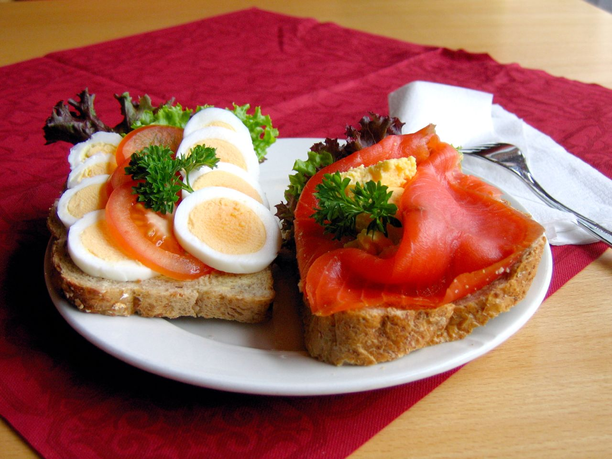

Paesi Scandinavi
Nei Paesi Scandinavi la colazione si fa con un open-faced sandwich, che mette sul pane una crema spalmabile e poi un topping a base di pesce stagionato, salumi, formaggi, verdure e/o uova sode.
Polonia
In Polonia c’è qualcosa di simile per colazione, il kanapki, fette di pane o panini insaporiti con affettati, creme spalmabili di carne, salsiccia kielbasa, formaggi a pasta molle e dura, pomodori, uova strapazzate con salsiccia o alla coque.
America
Negli Stati Uniti d’America non ci sono vere e proprie regole e, quindi, può prevedere cibi sia dolci che salati, mettendo insieme uova, bacon, cereali, donuts e muffin, il tutto accompagnato da caffè americano, centrifugati o succhi di frutta.